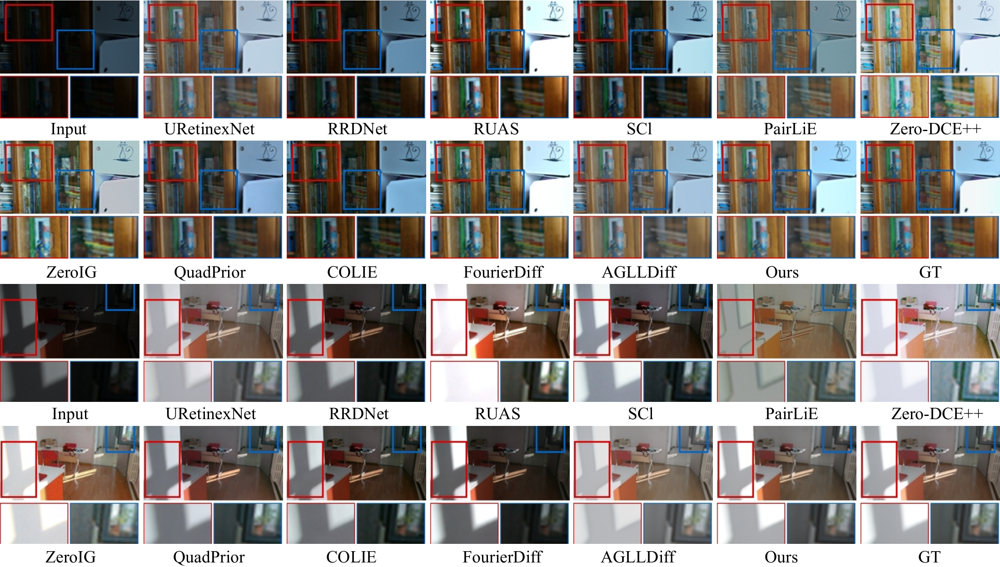
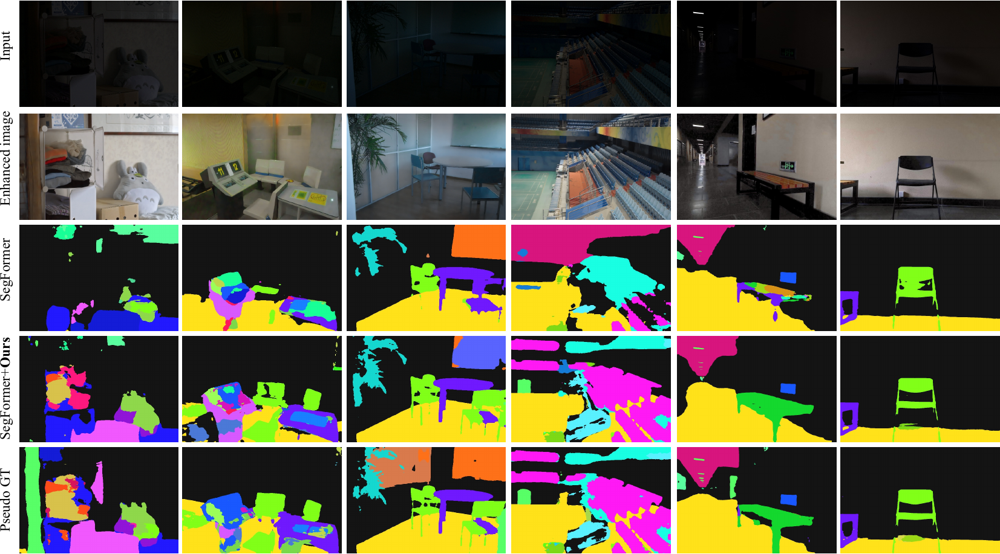

Retinex prior calibration
Test-time decomposition estimates image-specific illumination, reflectance, degradation, and the reliability of the physical prior.
Research project / Image restoration
IEEE Transactions on Circuits and Systems for Video Technology, 2026
Anhui University · †Corresponding authors

Low-light images often combine underexposure with noise, color distortion, and uneven illumination. Diffusion-based enhancement can restore detail, but zero-shot methods may drift away from the scene structure or original color. DARD uses image-specific, degradation-aware Retinex priors to guide reverse diffusion. It adapts the balance between physical structure and generated detail over time, then refines each step with physical-consistency and semantic guidance. The result is more reliable low-light restoration without paired training data.
Test-time decomposition estimates image-specific illumination, reflectance, degradation, and the reliability of the physical prior.
Timestep-adaptive fusion injects the Retinex prior into diffusion, balancing structure at one stage and generated detail at another.
Physical consistency and CLIP-based semantic guidance constrain the denoising trajectory to reduce artifacts and semantic drift.

The paper evaluates DARD on paired and unpaired low-light benchmarks and compares restored images with other enhancement methods. It also tests whether the enhanced images improve a downstream semantic-segmentation model.


@article{cai2026dard,
title={DARD: Zero-Shot Degradation-Aware Retinex-Guided Diffusion for Low-Light Image Enhancement},
author={Cai, Wenjie and Yang, Yuezhe and Xia, Jianyang and Dong, Xingbo and Jin, Zhe},
journal={IEEE Transactions on Circuits and Systems for Video Technology},
year={2026},
url={https://ieeexplore.ieee.org/abstract/document/11701592}
}